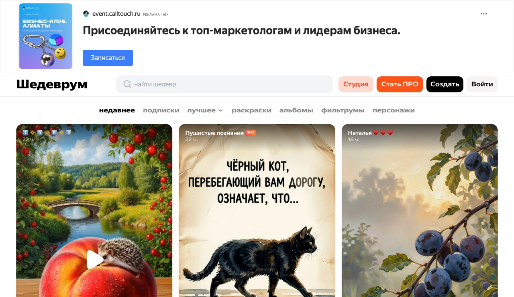

Основные рабочие инструменты это ChatGPT и Claude Code, на них собирают проекты за 25-35к. Эта страница на случай, когда доступа к ним нет совсем.
Здесь то, что грузится из России напрямую и бесплатно. По каждому сервису: лимит, задача и сколько за неё платят. Качество кода и текста тут ниже, для первых денег на простых задачах хватает.
Что напрямую не работает
ChatGPT, Claude, Gemini и Midjourney из РФ не открываются. В подборках их выдают за доступные, но ведут через рублёвые прокладки типа Study24, GPTunnel, ЧадGPT: 300-2000 рублей в месяц. Бесплатным там и не пахнет.
Текст
Четыре чата, на которых работают за деньги
1. GigaChat от Сбера
giga.chat
Вход по Sber ID, тот же логин, что в приложении банка. Карта не нужна. Пишет посты, письма, статьи, таблицы. Внутри генерация картинок Kandinsky. Дневного потолка сообщений в веб-версии нет.
Из РФ · без VPN
2. Алиса AI и YandexGPT
ya.ru/alice
Вход по Яндекс ID: если есть Почта или Музыка, аккаунт уже готов. Разбирает загруженные PDF и фото, оживляет картинки, есть Промптхаб с готовыми запросами. Базовый режим бесплатный.
Из РФ · без VPN
3. DeepSeek
chat.deepseek.com
Для сложного: длинные тексты, разбор PDF и docx, код, веб-поиск. Базовый чат работает без регистрации, почта нужна только чтобы сохранять историю. В часы пик встречает проверкой на робота и очередью.
Иногда просит проверку
4. Qwen от Alibaba
chat.qwen.ai
Запасной, когда DeepSeek лежит. Нужен бесплатный аккаунт. Тексты, код, анализ фото и файлов, картинки с читаемым текстом внутри. Тарифы за 2026 год меняли несколько раз, перед объёмным заказом проверяй лимит.
Тарифы меняются
GigaChat: вход по Sber ID, карта не нужна
Алиса AI: слева Промптхаб с готовыми запросами
Промпт, с которого начинают
Запрос уровня «напиши пост» даёт воду. Рабочий промпт содержит роль, бизнес, задачу и формат. Скопируй и подставь свои данные:
Промпт · посты для бизнесаТы копирайтер для малого бизнеса. Бизнес: кофейня в спальном районе, средний чек 400 рублей, гости с утра по дороге на работу.
Напиши 5 постов для Телеграм-канала: анонс завтраков, польза зерна, история бариста, акция на вторую чашку, ответ на вопрос «почему у вас дороже».
Формат: 600-800 знаков, без смайлов в начале, в конце один вопрос читателю. Пиши простыми словами, без пафоса.
Чем точнее описан бизнес и формат, тем меньше правок после нейросети
Картинки
Здесь у новичка узкое место
5. Шедеврум от Яндекса
shedevrum.ai
Основной инструмент под поток картинок: на сайте до 70 генераций в день плюс 20 первых кадров и 10 роликов, в мобильном приложении лимита нет. Промты на русском.
До 70 картинок в день
6. Kandinsky от Сбера
fusionbrain.ai
Обложки и рекламные карточки, промты на русском. Бесплатно около 20 генераций в месяц, дальше 499 рублей за 200 картинок. Лимит закончится на втором заказе, поэтому для потока держи Шедеврум или Kandinsky внутри GigaChat.
Бесплатно ~20 в месяц
shedevrum.ai

Шедеврум: лента чужих работ подсказывает рабочие промты
Kandinsky понимает русский, переводить промт не нужно
Промпт · карточка товараРекламная фотография товара для карточки маркетплейса: керамическая кружка ручной работы, матовая глазурь цвета терракота, стоит на светлом деревянном столе у окна, мягкий утренний свет, рядом ветка эвкалипта, фон размытый, вертикальный кадр, без текста и логотипов.
Описывай предмет, поверхность, свет, фон и ориентацию кадра. Общие слова дают общий результат
Деньги
Как на этом заработать
1
Собери образцы за вечер
3 поста, 3 обложки или карточки товара, 1 короткая статья. Это витрина, её показываешь заказчику вместо портфолио.
2
Выстави услугу простыми словами
Авито, Kwork, телеграм-чаты по фрилансу и SMM. Формулировки без умных слов: «тексты и посты нейросетью», «картинки и обложки», «карточки для маркетплейсов».
3
Первые 3-5 заказов бери дёшево
Сейчас нужны отзывы, деньги подождут. После пяти отзывов поднимаешь цену и берёшь клиентов на поток.
| Работа | Цена |
|---|
| Пост для соцсетей | 800-1000 ₽ |
| Короткая статья | 3-5 тысяч |
| 10 рекламных картинок | около 10 тысяч |
| Короткое видео | 1-1,5 тысячи |
| Первые 5-10 заказов суммарно | 20-40 тысяч |
| На потоке, несколько клиентов | 80-150 тысяч в месяц |
Оплата за проект
Так выглядит входящий платёж за собранный проект. Работа сделана на тех же сервисах из этого списка: бесплатный тариф, без вложений и технического образования.
Ограничения
Что нужно знать до старта
Первый вечер уйдёт на регистрации. Залогиниться везде и потыкать интерфейсы, дальше быстрее.
Доступ без VPN не гарантирован навсегда. У DeepSeek и Qwen он зависит от провайдера и нагрузки. Держи запасной: лёг DeepSeek, работаешь на Qwen, легла Алиса, идёшь в GigaChat.
Лимиты плавают. Бесплатное сегодня завтра становится платным, особенно у Qwen. Проверяй до того, как пообещал клиенту объём.
Платные функции из РФ оплатить трудно, нужна валютная карта. Схему заработка на этом не строй.
Платят за готовый результат: текст, картинку, карточку, ролик. За доступ к нейросети не платит никто. 150 тысяч в месяц это верхний край, на первой неделе их не будет: первые недели закладывай отзывы и те самые 20-40 тысяч.